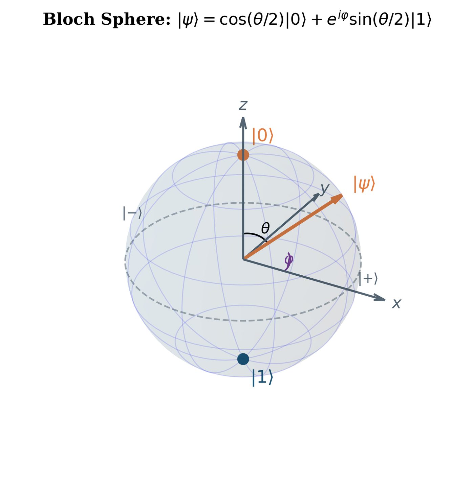
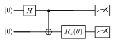
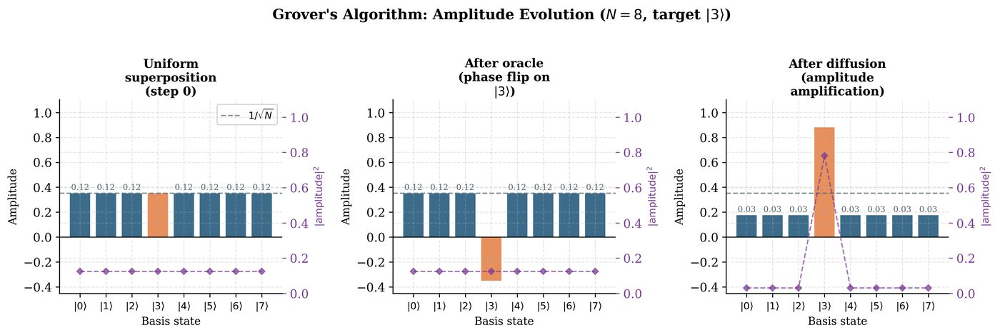
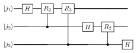

Chapter 2: Quantum Computing Essentials¶
This chapter is the quantum core of the book. We build from first principles: the qubit as a physical two-level system, quantum gates as unitary transformations, measurement as the interface between quantum and classical worlds, entanglement as a uniquely quantum resource, and the density matrix formalism for noisy systems. We close with the key quantum algorithms — Grover, QFT, QPE, and HHL — whose efficiency advantages motivate the entire field of QML.
Learning Objectives
By the end of this chapter, you will be able to:
-
Represent quantum states as vectors and visualize them on the Bloch sphere
-
Apply single- and multi-qubit quantum gates and compose quantum circuits
-
Compute measurement probabilities using the Born rule
-
Construct Bell states and analyze entanglement via Schmidt decomposition
-
Work with density matrices for mixed states and quantum channels
-
Trace through the key quantum algorithms: Grover, QFT, QPE, HHL
2.1 From Bits to Qubits¶
2.1.1 The Qubit¶
A qubit (quantum bit) is a two-level quantum system. Unlike a classical bit that is either 0 or 1, a qubit can exist in any superposition:
Physical realizations include: superconducting transmon qubits (IBM, Google), trapped ion qubits (IonQ, Quantinuum), photonic modes, nitrogen-vacancy centers.
2.1.2 The Bloch Sphere¶
Every pure qubit state corresponds to a point on the unit sphere in \(\mathbb{R}^3\):
Key states on the Bloch sphere:

2.2 Quantum Gates and Circuits¶
2.2.1 Single-Qubit Gates¶
Quantum gates are unitary transformations. The Pauli gates:
The Hadamard gate creates superposition: \(H = \tfrac{1}{\sqrt{2}}\begin{pmatrix}1&1\\1&-1\end{pmatrix}\). Action: \(H|0\rangle = |+\rangle\), \(H|1\rangle = |-\rangle\).
Phase gates:
Rotation gates (key for parameterized circuits):
Similarly \(R_y(\theta) = e^{-i\theta Y/2}\), \(R_z(\theta) = e^{-i\theta Z/2}\).
Note
Every single-qubit gate can be written as \(U = e^{i\alpha}R_z(\beta)R_y(\gamma)R_z(\delta)\) for some angles — this is the ZYZ decomposition, which underlies universal quantum computation.
2.2.2 Two-Qubit Gates¶
| Gate | Matrix (4×4) | Action |
|---|---|---|
| CNOT (CX) | \(\begin{pmatrix}I & 0\\ 0 & X\end{pmatrix}\) | \(|c,t\rangle \mapsto |c, c\oplus t\rangle\) |
| CZ | \(\text{diag}(1,1,1,-1)\) | \(|11\rangle \mapsto -|11\rangle\) |
| SWAP | Swaps qubits | \(|ab\rangle \mapsto |ba\rangle\) |
| \(R_{ZZ}(\theta)\) | \(e^{-i\theta Z\otimes Z/2}\) | Entangling rotation |
2.2.3 Quantum Circuits¶
A quantum circuit is a sequence of gate operations on qubits. Circuit conventions: time flows left to right; each horizontal line is a qubit wire.

Parameterized Quantum Circuits (PQCs) replace fixed angles with trainable parameters \(\boldsymbol{\theta}\). This is the foundation of variational QML algorithms.
Solved Example 2.1
Problem: Trace through the 2-qubit circuit: \(H\) on qubit 0, CNOT with control 0 and target 1, starting from \(|00\rangle\).
Solution:
-
Start: \(|00\rangle\)
-
After \(H \otimes I\): \((H|0\rangle) \otimes |0\rangle = |+\rangle \otimes |0\rangle = \tfrac{1}{\sqrt{2}}(|00\rangle + |10\rangle)\)
-
After CNOT: \(\text{CNOT}\) flips target when control is \(|1\rangle\): \(\tfrac{1}{\sqrt{2}}(|00\rangle + |11\rangle) = |\Phi^+\rangle\)
Result: Bell state \(|\Phi^+\rangle\) — this circuit creates maximal entanglement.
2.3 Quantum Measurement¶
2.3.1 Projective Measurements and the Born Rule¶
For a state \(|\psi\rangle\) and observable \(\hat{O} = \sum_m o_m \Pi_m\) (spectral decomposition):
Post-measurement state: \(\frac{\Pi_m|\psi\rangle}{\sqrt{\langle\psi|\Pi_m|\psi\rangle}}\).
Expectation value:
2.3.2 Shot Noise and Statistical Estimation¶
A single measurement samples a random outcome. To estimate \(\langle\hat{O}\rangle\) to precision \(\epsilon\) with confidence \(1-\delta\):
since \(\|\hat{O}\| \leq 1\) for Pauli observables. This \(1/\epsilon^2\) scaling is a fundamental cost of quantum computation.
2.4 Quantum Entanglement¶
2.4.1 Bell States¶
The four Bell states form a maximally entangled orthonormal basis for two qubits:
None of these can be written as \(|\psi_A\rangle \otimes |\psi_B\rangle\).
2.4.2 Schmidt Decomposition and Entanglement Entropy¶
Theorem 2.1 (Schmidt Decomposition)
For any pure state \(|\psi\rangle \in \mathcal{H}_A \otimes \mathcal{H}_B\), there exist orthonormal bases \(\{|u_i\rangle\}\) and \(\{|v_i\rangle\}\) and non-negative Schmidt coefficients \(\{s_i\}\) with \(\sum_i s_i^2 = 1\) such that:
The Schmidt rank \(r\) is the number of non-zero \(s_i\). The state is a product state iff \(r=1\). Entanglement entropy:
where \(\rho_A = \text{Tr}_B[|\psi\rangle\langle\psi|]\) is the reduced density matrix.
2.5 Density Matrices and Open Quantum Systems¶
2.5.1 Mixed States¶
A density matrix \(\rho\) describes both pure states (\(\rho = |\psi\rangle\langle\psi|\)) and mixed states (probabilistic mixtures):
Properties: \(\rho = \rho^\dagger\) (Hermitian), \(\text{Tr}[\rho] = 1\) (normalized), \(\rho \geq 0\) (positive semidefinite). Pure state iff \(\text{Tr}[\rho^2] = 1\).
Expectation value of \(\hat{O}\): \(\langle\hat{O}\rangle_\rho = \text{Tr}[\hat{O}\rho]\).
2.5.2 Quantum Channels¶
A quantum channel \(\mathcal{E}\) is a completely positive trace-preserving (CPTP) map. Kraus representation:
Key channels for QML:
-
Depolarizing: \(\mathcal{E}_p(\rho) = (1-p)\rho + \frac{p}{3}(X\rho X + Y\rho Y + Z\rho Z)\)
-
Amplitude damping: \(K_0 = \begin{pmatrix}1&0\\0&\sqrt{1-\gamma}\end{pmatrix}\), \(K_1 = \begin{pmatrix}0&\sqrt{\gamma}\\0&0\end{pmatrix}\)
-
Phase damping: \(K_0 = |0\rangle\langle0| + \sqrt{1-\gamma}|1\rangle\langle1|\), \(K_1 = \sqrt{\gamma}|1\rangle\langle1|\)
2.6 Key Quantum Algorithms¶
2.6.1 Grover’s Search Algorithm¶
Problem: Find a marked element \(w\) in an unsorted database of \(N=2^n\) items. Classical: \(O(N)\) queries. Grover: \(O(\sqrt{N})\) queries.
Algorithm: Grover’s Search Algorithm
Input: Oracle \(O_w\): \(|x\rangle \mapsto (-1)^{f(x)}|x\rangle\) where \(f(x)=[x=w]\).
Output: Marked item \(w\) with high probability.
-
Prepare uniform superposition: \(|s\rangle = H^{\otimes n}|0\rangle = \tfrac{1}{\sqrt{N}}\sum_x|x\rangle\)
-
Repeat \(R = \lfloor\frac{\pi}{4}\sqrt{N}\rfloor\) times:
-
Apply oracle \(O_w\) (phase flip on \(|w\rangle\))
-
Apply diffusion \(D = 2|s\rangle\langle s| - I\) (inversion about mean)
-
-
Measure in computational basis
Success probability: \(\geq 1/2\) after \(\lfloor\frac{\pi}{4}\sqrt{N}\rfloor\) iterations.

2.6.2 Quantum Fourier Transform¶
The QFT implements the DFT on quantum states:
Circuit: \(O(n^2)\) gates for \(n\) qubits (vs. classical FFT: \(O(N\log N)\)).

where \(R_k = \begin{pmatrix}1&0\\0&e^{2\pi i/2^k}\end{pmatrix}\).
2.6.3 Quantum Phase Estimation¶
Problem: Given unitary \(U\) and eigenstate \(|u\rangle\) (\(U|u\rangle=e^{2\pi i\phi}|u\rangle\)), estimate \(\phi\) to \(n\) bits of precision.
Algorithm: Quantum Phase Estimation (QPE)
Input: Unitary \(U\), eigenstate \(|u\rangle\), precision \(n\).
Output: \(n\)-bit estimate \(\tilde{\phi}\) of \(\phi\).
-
Prepare \(n\) ancilla qubits in \(H^{\otimes n}|0\rangle\) (uniform superposition)
-
Apply controlled-\(U^{2^k}\) gates: \(|k\rangle|u\rangle \mapsto e^{2\pi i k\phi}|k\rangle|u\rangle\)
-
Apply inverse QFT to ancilla register
-
Measure ancilla to obtain \(\tilde{\phi}\)
Complexity: \(O(n^2 + n \cdot T_U)\) gates where \(T_U\) is oracle complexity.
2.6.4 Harrow-Hassidim-Lloyd (HHL) Algorithm¶
Problem: Solve \(A\mathbf{x} = \mathbf{b}\) and output quantum state \(|x\rangle \propto A^{-1}|b\rangle\).
Complexity (under ideal conditions): \(O(\log(N) \cdot \kappa^2 / \epsilon)\) vs. classical \(O(N\kappa)\), where \(\kappa\) is the condition number. Exponential speedup in \(N\) — the basis of quantum speedups in ML (quantum PCA, quantum recommendation systems).
Warning
The HHL speedup requires: (1) efficient quantum RAM (qRAM) for loading \(|b\rangle\), (2) sparse/structured \(A\), (3) only need quantum state \(|x\rangle\) (not all components of the classical solution vector). These conditions are stringent and not met in most practical ML settings — see Chapter 23 for the dequantization discussion.
import pennylane as qml
import numpy as np
# Create a device (quantum simulator)
dev = qml.device("default.qubit", wires=2)
@qml.qnode(dev)
def bell_state_circuit():
"""Prepares the Bell state |Phi+>."""
qml.Hadamard(wires=0)
qml.CNOT(wires=[0, 1])
return qml.state()
@qml.qnode(dev)
def grover_2qubit():
"""Grover search for |11> in 2-qubit space (N=4)."""
# Initialize superposition
qml.Hadamard(wires=0)
qml.Hadamard(wires=1)
# Oracle: phase flip |11>
qml.CZ(wires=[0, 1])
# Diffusion: 2|s><s| - I
qml.Hadamard(wires=0); qml.Hadamard(wires=1)
qml.PauliZ(wires=0); qml.PauliZ(wires=1)
qml.CZ(wires=[0, 1])
qml.PauliZ(wires=0); qml.PauliZ(wires=1)
qml.Hadamard(wires=0); qml.Hadamard(wires=1)
return qml.probs(wires=[0, 1])
print("Bell state:", bell_state_circuit())
probs = grover_2qubit()
print(f"Grover probs: {probs}") # |11> should have prob ~1.0
2.7 Chapter Summary¶
Chapter Summary
-
A qubit is a two-level quantum system described by a normalized vector in \(\mathbb{C}^2\). The Bloch sphere provides geometric intuition.
-
Quantum gates are unitaries. Single-qubit: Paulis, \(H\), \(S\), \(T\), rotations \(R_x, R_y, R_z\). Two-qubit: CNOT, CZ, SWAP.
-
Born rule: \(P(m) = \text{Tr}[\Pi_m \rho]\). Shot noise requires \(O(1/\epsilon^2)\) measurements.
-
Entanglement: Bell states, Schmidt decomposition, entanglement entropy. Entanglement is a resource for quantum speedups.
-
Density matrices: Generalize pure states to mixed states/open systems. Quantum channels (CPTP maps) model noise via Kraus operators.
-
Key algorithms: Grover (\(O(\sqrt{N})\) search), QFT (\(O(n^2)\) circuit), QPE (phase estimation), HHL (linear systems with exponential speedup under caveats).
Exercises¶
Exercises
Exercise . Show that the Hadamard gate \(H\) is both Hermitian (\(H=H^\dagger\)) and unitary (\(HH^\dagger=I\)). What does this tell us about its eigenvalues?
Exercise . For \(|\psi\rangle = \frac{\sqrt{3}}{2}|0\rangle + \frac{1}{2}|1\rangle\), find the probability of measuring \(|0\rangle\) and \(|1\rangle\). What are the Bloch sphere angles \(\theta\) and \(\phi\)?
Exercise . Show that \(R_z(\phi)R_x(\theta) \neq R_x(\theta)R_z(\phi)\) in general. (Quantum gates do not generally commute.)
Exercise . Prepare all four Bell states using quantum circuits. Start from \(|00\rangle\) for each. Show the circuit and verify with matrix multiplication.
Exercise . For the state \(|\psi\rangle = \frac{1}{2}|00\rangle + \frac{\sqrt{3}}{2}|11\rangle\), compute the Schmidt decomposition and the entanglement entropy.
Exercise . Prove that the depolarizing channel \(\mathcal{E}_p(\rho) = (1-p)\rho + \frac{p}{3}(X\rho X+Y\rho Y+Z\rho Z)\) sends any state to the maximally mixed state \(I/2\) when \(p=3/4\).
Exercise . Derive the number of iterations \(R = \lfloor\frac{\pi}{4}\sqrt{N}\rfloor\) needed for Grover’s algorithm. Hint: Model the algorithm as rotation in a 2D subspace spanned by \(|w\rangle\) and the uniform superposition orthogonal to \(|w\rangle\).
Exercise . Show that the QFT on 1 qubit is the Hadamard gate. Show that the QFT on 2 qubits requires the circuit: \(H\) on qubit 0, controlled-\(R_2\) with target 0 and control 1, \(H\) on qubit 1, SWAP. Verify by multiplying out the matrices.
Exercise . Using PennyLane, implement Grover’s algorithm for \(n=3\) qubits searching for \(|101\rangle\). Plot the probability of measuring the target state as a function of iteration count.
Exercise . The no-cloning theorem states there is no unitary \(U\) such that \(U(|\psi\rangle \otimes |0\rangle) = |\psi\rangle \otimes |\psi\rangle\) for all \(|\psi\rangle\). Prove this. What implications does it have for quantum error correction?
Further Reading
-
Nielsen & Chuang (Nielsen and Chuang 2000) — the definitive reference for quantum computing
-
Preskill’s lecture notes (Preskill 2022) — free online, comprehensive
-
IBM Qiskit Textbook (
qiskit.org/learn) — interactive online version -
PennyLane Codebook (
pennylane.ai/codebook) — interactive QML exercises -
Wilde, Quantum Information Theory (Wilde 2013) — for deeper channels